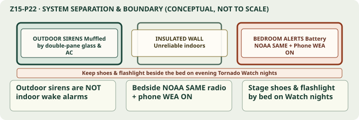

Z15-P22 · Disaster scenarios · New manuscript
Recognize why outdoor sirens never replace indoor nighttime warning receivers
Eliminate deadly nighttime tornado vulnerability caused by expecting outdoor municipal sirens to wake sleeping families inside insulated homes.
When it applies · All residential neighborhoods, rural areas, and nocturnal severe-weather seasons.
Equipment · Bedside battery-backed NOAA Weather Radio with SAME alarm and smartphone set to bypass Do-Not-Disturb for WEA alerts.

Actions
- Understand explicitly that municipal outdoor warning sirens are engineered ONLY to alert people who are OUTDOORS—modern double-pane windows, air conditioners, heavy rain, wind roar, and rural distances routinely make sirens completely inaudible inside sleeping bedrooms.[D23, D03, T14]
- Place a loud battery-backed NOAA Weather Radio programmed with your county SAME code inside your bedroom AND verify smartphone Wireless Emergency Alerts (WEA) remain turned ON and allowed to sound through nighttime Do-Not-Disturb settings.[D23, T15, D01, D03]
- Keep sturdy shoes, a flashlight, and phone charger beside the bed on evening Tornado Watch nights so waking to an alarm leads straight to basement shelter in seconds.[D03]
Failure recognition · Going to bed during a summer Tornado Watch with phone on silent, no NOAA radio, and assuming "the town siren will wake us up."[D03, T15]
Verify · Confirm bedside NOAA SAME radio tested with fresh backup batteries and phone WEA enabled to override silent/sleep modes.[T15, D01]
Stop or change course · Never rely on a single power-dependent or outdoor-only warning method during overnight severe-weather watches.[D01, T15]
Evidence and editorial notes
- D01 · FEMA / Ready.gov · Be Informed and Multi-Hazard Preparedness (current web edition)
- Section: Be Informed > Local Hazard Assessment, Alerts, and Jurisdiction Mapping · Conditions: Households preparing for regional multi-hazard emergencies
Support: Identify specific local hazards, sign up for county/municipal opt-in alerts alongside WEA/EAS and NOAA Weather Radio, know official evacuation zone labels, and review household plans twice yearly.
Limitations: Emergency warning systems, siren policies, and shelter locations vary strictly by county and municipality. · Conflicting evidence: None; aligns with T14 and T15.
Editorial note: Establishes jurisdiction-specific alert and planning baseline in Z15. · Specialist reviewer: Emergency management specialist
Primary source · checked 2026-11-24 - D03 · National Weather Service · Tornado Safety: During a Tornado (Current web edition)
- Section: During a Tornado: at home, outside or in a vehicle · Conditions: Tornado warning; options depend on location and flood danger
Support: Use a sturdy building’s lowest suitable interior area when possible. Mobile homes and overpasses are unsafe. Follow the vehicle or outdoor last-resort branch if sturdy shelter cannot be reached.
Limitations: A low outside spot is conditional on safe access and absence of flood danger. Follow local alerts. · Conflicting evidence: See A02 claim audit for boundaries.
Editorial note: Core tornado shelter-selection and post-storm hazard evidence in Z15. · Specialist reviewer: Meteorology and emergency management
Primary source · checked 2026-11-25 - D23 · NOAA NWS (Quad Cities office) · Outdoor Warning Sirens: Frequently Asked Questions (current web edition)
- Section: Outdoor Warning Sirens: Frequently Asked Questions · Conditions: Relying on outdoor sirens for warnings indoors or at night
Support: Sirens are an outdoor warning system designed only to alert those who are outside that something dangerous is approaching. For alerts indoors, every home and business should have a NOAA Weather Radio All-Hazards.
Limitations: Local NWS office page; siren policy varies by community. · Conflicting evidence: None.
Editorial note: Grounds the Z15-P22 siren and indoor-receiver relationship. · Specialist reviewer: Meteorology and emergency communications
Primary source · checked 2026-11-25 - T14 · FEMA / Ready.gov · Emergency Alerts (current web edition)
- Section: Emergency Alerts > WEA, EAS, and NOAA Weather Radio · Conditions: Receiving time-critical hazard warnings at home or outdoors
Support: Use multiple redundant alert channels—Wireless Emergency Alerts, local opt-in alerts, and battery/crank NOAA Weather Radio—so a single dead phone or tower outage does not eliminate warning reception.
Limitations: Backcountry terrain can block both cellular and VHF weather radio reception. · Conflicting evidence: None; aligns with NOAA-NWR.
Editorial note: Grounds emergency warning redundancy in Z01 communication cards. · Specialist reviewer: Emergency management and communications
Primary source · checked 2026-11-24 - T15 · NOAA NWS · NOAA Weather Radio All Hazards (current web edition)
- Section: NOAA Weather Radio All Hazards > Coverage and Receivers · Conditions: Weather and civil-hazard monitoring across the United States
Support: NOAA Weather Radio broadcasts continuous official warnings directly from NWS offices on VHF frequencies; battery or hand-crank receivers with SAME alerting operate independently of cellular networks.
Limitations: VHF line-of-sight range can be attenuated in deep valleys or dense metal structures; verify local transmitter reception before relying on it. · Conflicting evidence: None; aligns with READY-ALERTS.
Editorial note: Documents offline weather-alert radio capabilities and reception limits. · Specialist reviewer: Meteorology and emergency communications
Primary source · checked 2026-11-24
Source lineage · FEMA Ready.gov Tornadoes and Alerts; new manuscript · Classification · New manuscript.